| 日付 | 2007年10月28日（日） - 2007年10月29日（月） | ||||
|---|---|---|---|---|---|
| 山域 | 八ヶ岳 | ||||
| メンバー | 単独 | ||||
| 山行形態 | 1泊2日小屋泊 | ||||
| アクセス | 電車、バス | ||||
| ルート (Map) |
|
月曜に有休をとって3連休で山に行こうとしたが土曜は大雨。
仕方なく、1泊2日で行ける山を探す。
そこで、白羽の矢が立ったのが八ヶ岳北部の人気の山・蓼科山。
1日目
バスに乗って、八ヶ岳連峰を横断する麦草峠に向かう。
山腹は紅葉が非常にきれい。
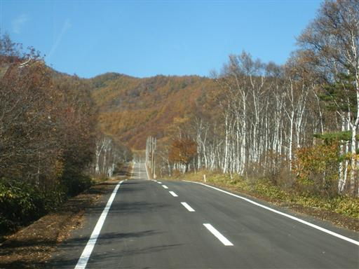
10:40 麦草峠到着。標高2127m。
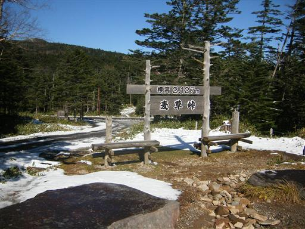
本日は快晴。雪が積もっているが、今日の気温は15度程度。
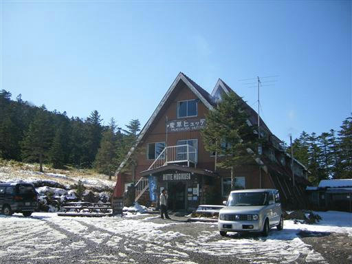
峠道を走るバイクは立ち往生。
この雪では2輪は走れない。
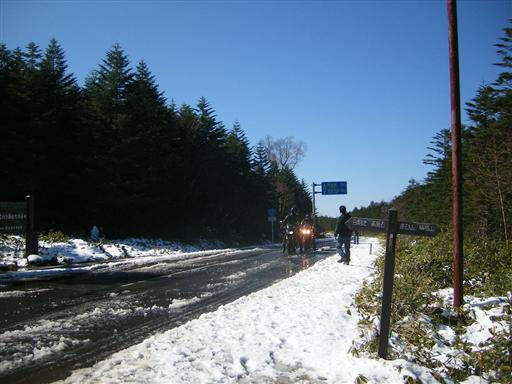
準備を整えて登山開始。
雪が解けてべちゃべちゃになった登山道を行く。
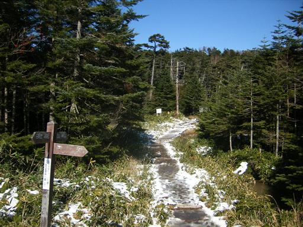
北八ヶ岳独特のゆったりとした山並。
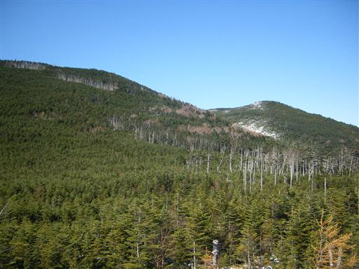
茶臼山に到着。標高2384m。
山頂は樹林に覆われているが、近くに展望台がある。
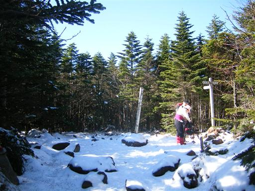
水たまりが凍ってシャーベット状になっている。
見る分にはきれいだが、歩くのは大変。
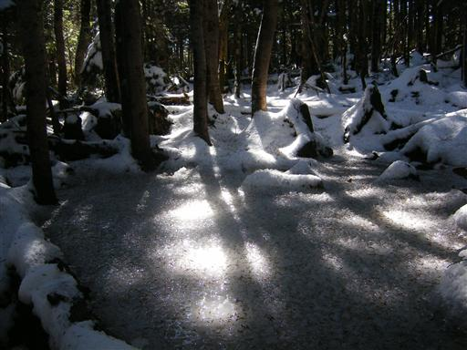
非常に眺めの良い展望台に到着。
八ヶ岳、南アルプス、中央アルプス、御嶽山、乗鞍岳、北アルプス、すべてが見える。
真ん中の山脈は中央アルプス。右手に見えるのは御嶽山。
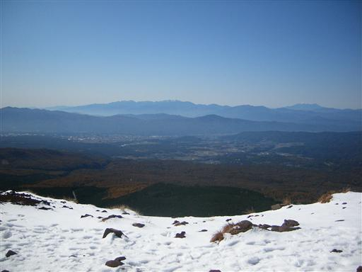
間近には荒々しい八ヶ岳連峰が見える。
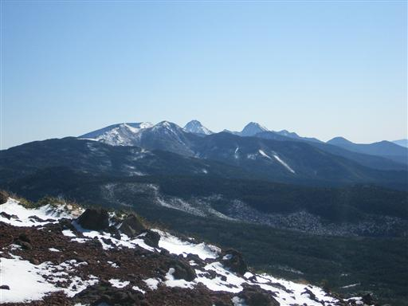
遠くの方にある雪をかぶった山々は北アルプス。
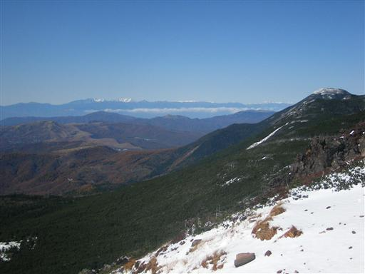
縞枯山に向かって歩き出す。
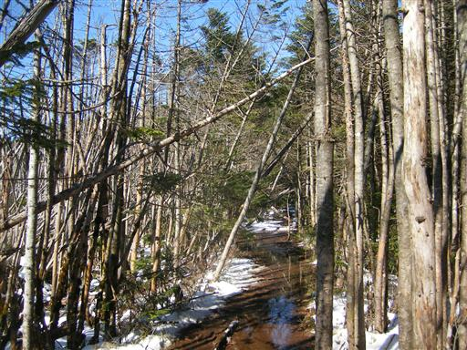
山の斜面には立ち枯れた木が帯状に広がっている。
枯木でできた縞模様は徐々に山頂に向かって移動していく。
この不思議な自然現象はまだはっきりと解明されていないらしい。
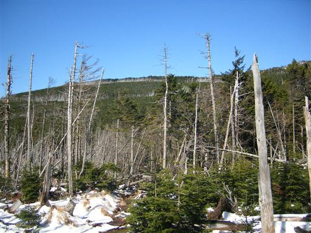
立枯れ地帯では所々で視界が開ける。
白い峰は浅間山。
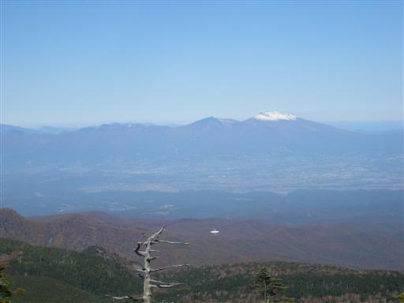
登山道は樹林帯と立枯れ地帯が繰り返される。
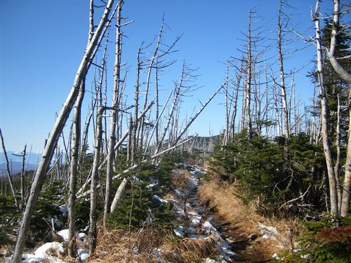
12:50 縞枯山到着。標高2402m。
縞枯現象が見られるから縞枯山。なんと安直な…
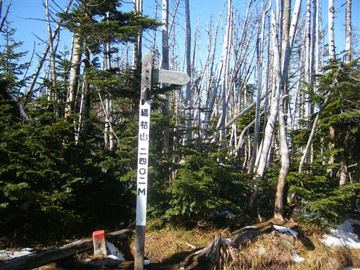
縞枯山を下山し、三ツ岳をめざす。
こちらは岩ごろごろの山である。
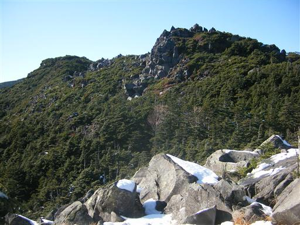
おだやかな登山道から一変、鎖場まで現れる。

三ツ岳山頂に到着。
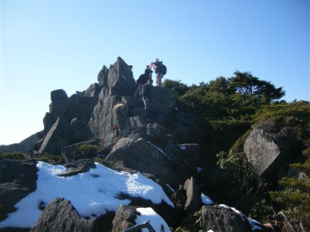
山頂からの眺め。浅間山から西上州方面の眺めが良い。
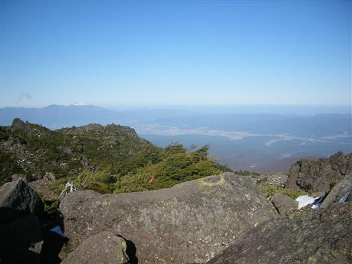
奥に見える丸い山は、明日登る予定の蓼科山。
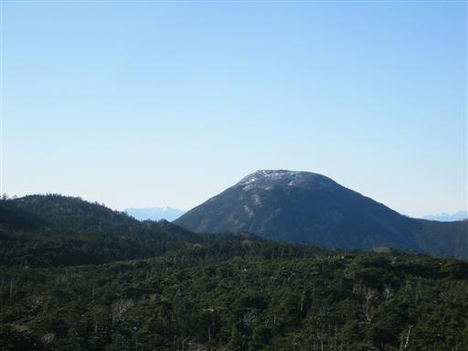
下の方に見える平らなところまではロープウェイが通じている。
これに乗って辺りを周遊する登山客も多い。
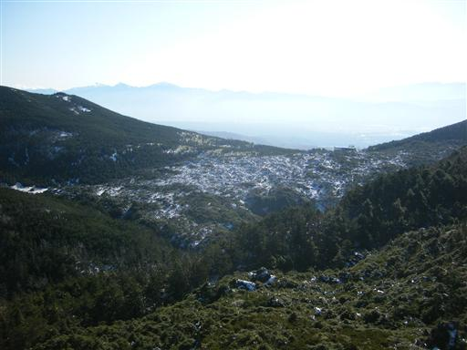
三ツ岳からの下りも岩場がある。
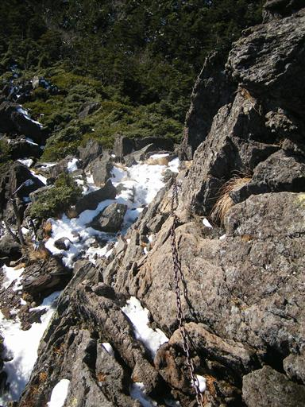
雪が積もっているので、岩の上はスリップして歩きにくい。
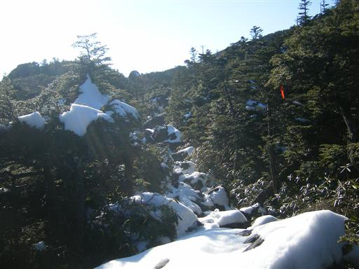
15:00 本日の宿泊地、北横岳ヒュッテ到着。標高2390m。
今日は天気が良いので、先に近くの北横岳まで行くことにする。
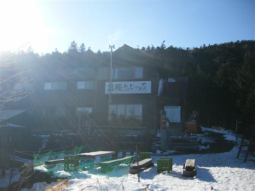
北横岳に到着。八ヶ岳の展望が素晴らしい。
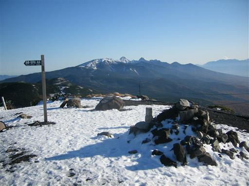
山頂にあった雪だるま。背後は蓼科山。
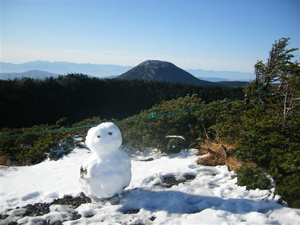
山頂からの眺め。ここからも四囲の眺望が思いのまま。
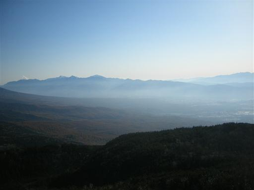
北横岳を下山し、山荘近くの七ツ池に行く。
池は所々凍っている。
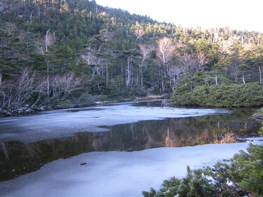
非常に静かな湖面。湖に映る青い空が美しい。
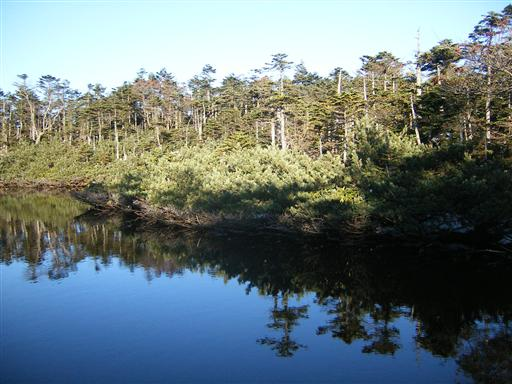
北横岳ヒュッテに到着。
客は自分ひとり。しかも素泊まり。
客がいない日は閉めているそうで、ちょっと申し訳なかったか…
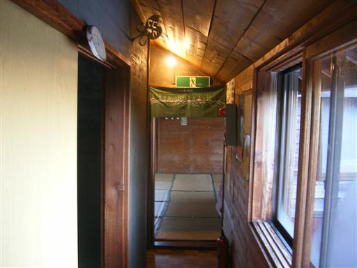